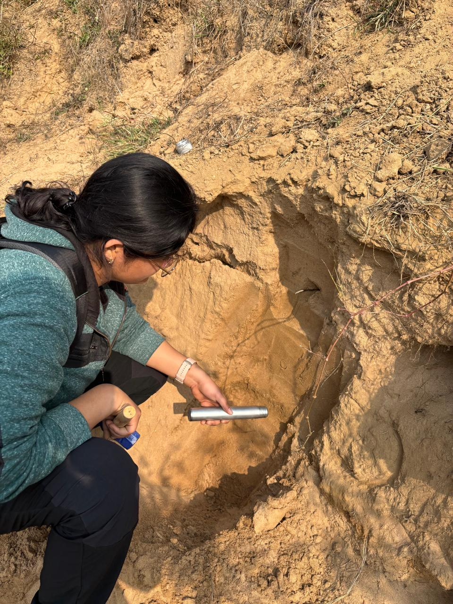
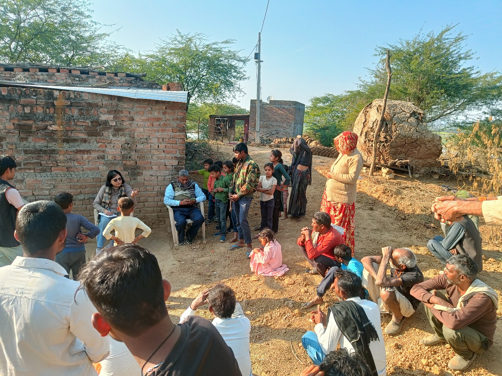
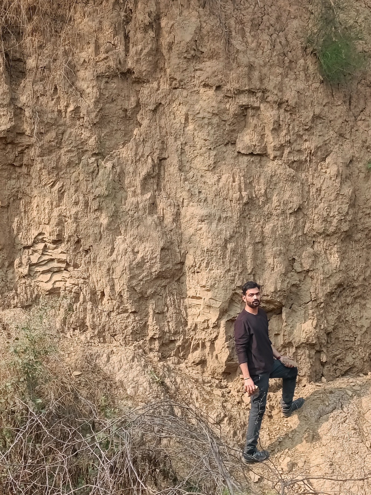
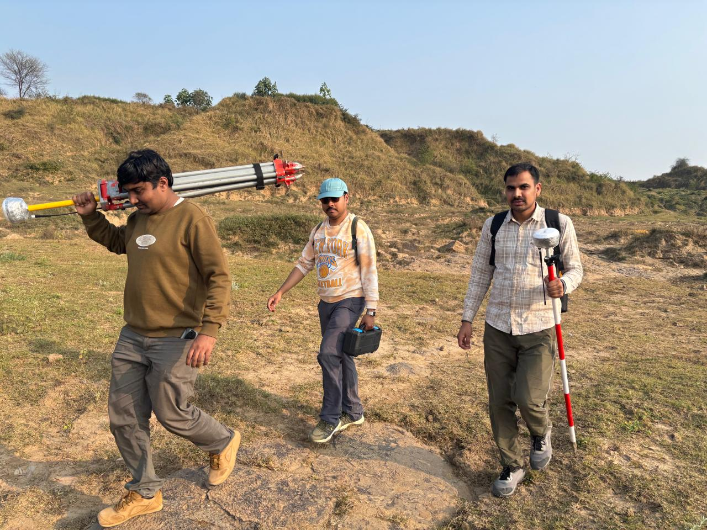
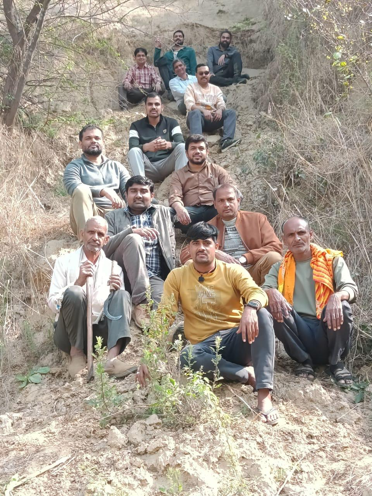
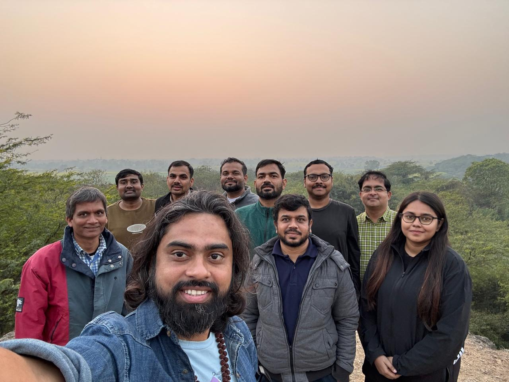
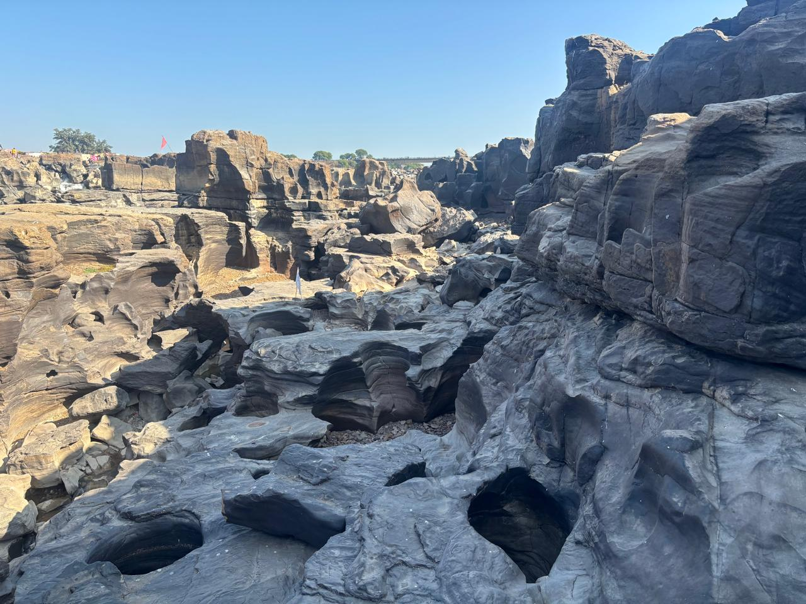

Chambal Badlands Field Campaign
Before my first visit, the Chambal meant one thing to most people I knew: bandits. What I found instead — stretching to the horizon in every direction — was one of the most geomorphologically spectacular and scientifically neglected landscapes in South Asia, and a region whose people are living with the very real consequences of a landscape in rapid, relentless change. Here are my reflections on a recent field campaign drawing together six universities and researchers at every career stage.
There is a particular kind of anxiety that comes with leading a large field campaign – one that has nothing to do with the science itself. It is the anxiety of responsibility: for the safety of fifteen people across unfamiliar terrain, for the integrity of data that has taken months of planning to design, and for the expectations of institutions and funding bodies who have placed their trust in a proposal that existed, until this January, only on paper. As our convoy pulled into Morena on the evening of 9th January 2026, I felt all of that simultaneously. By the time we left ten days later, I felt something else entirely.
The seeds of this project were planted, as many good ideas are, almost by accident. My Royal Society–Newton International Fellowship, which focuses on water security in dryland India, had brought me into sustained contact with Indian colleagues and institutions – IIT Gandhinagar, PRL Ahmedabad – and it was through those connections that the Chambal first entered my thinking seriously. I will admit that before that first visit, the Chambal meant something quite different to me than it does now. Like many Indians who grew up far from the region, my mental image of the Chambal was shaped almost entirely by its reputation as dacoit country – the landscape of outlaws and ravines that features so vividly in popular imagination. The geomorphology was simply not something I had engaged with seriously. In January 2024, Jayesh, Stephen, Vikram, Vikrant, and I made a short reconnaissance visit to the badlands as an offshoot of that fellowship work. I had heard Vikram speak about the ravines with the quiet reverence of someone who has returned to a landscape year after year since 2008, but nothing had prepared me for the scale of what I saw. Standing at the edge of a dhand and looking out over kilometres of deeply dissected terrain – the light catching the cliff faces at dusk, the river glinting far below – I understood immediately that this landscape demanded more than it had received from the scientific community. Much of the scientific vision for what this project would become crystallised during and after that 2024 visit, in conversations between Vikram, Vikrant, Stephen, and me. Vikram's forensic familiarity with the Chambal's spatial patterns and dynamics, Vikrant's instinct for how Indian fluvial systems encode their tectonic and climatic histories, and Stephen's comparative perspective from badlands and gully systems elsewhere in the world collectively shaped the four-objective framework that would eventually become our ISPF proposal. We drove back that first evening with more questions than we had arrived with, and the outline of a research programme forming in my mind.
The ISPF application that emerged from those conversations was, in hindsight, an attempt to match the complexity of the landscape with the breadth of expertise needed to interrogate it properly. It was structured around four interlocking objectives: establishing the age and causal factors of badland formation through luminescence dating, isotopic analyses, and geomorphic mapping; assessing the role of badlands in soil carbon storage and loss through CO₂ and CH₄ flux measurements; identifying best-practice land management techniques through stakeholder engagement and field reconnaissance; and promoting the badlands as geoheritage sites capable of supporting geoeducation and geotourism. What bound these four threads together was a shared ambition: to produce not merely papers, but a scientific, practical, and social blueprint for transforming a deeply degraded landscape into a resilient and culturally valued one. The funding window through which we applied was narrow, and the time between identifying the opportunity and submitting the proposal was short by any standard. What made it possible was the speed and generosity with which every colleague responded. Across different time zones, institutional calendars, and competing commitments, people turned around their contributions, confirmed their participation, and offered resources with a readiness that I did not take for granted then, and do not now.

1. One of the first OSL samples, being collected by Dr Malika Singhal.
I am grateful to Aberystwyth University for funding the project at £24,350, and deeply grateful to the colleagues who responded to my invitation with such enthusiasm. Several individuals deserve particular mention for the structural role they played in making this project viable.
Naveen Chauhan at PRL Ahmedabad is one of India's leading luminescence scientists, with decades of research on OSL dating protocols, dosimetry, and single-grain analysis at one of the most sophisticated luminescence facilities in South Asia. His willingness to commit PRL's laboratory to the analysis of our samples, entirely as in-kind support – covering OSL, radiocarbon, and stable isotope measurements that would have cost upwards of £20,000 at UK commercial rates – was transformative. Without that commitment, this project would have been a very different and considerably more limited exercise.
Amzad Laskar, also at PRL Ahmedabad, an excellent researcher and an old friend, whose work sits precisely at the intersection this project needed most. His research applies traditional and non-traditional stable and radiogenic isotopes – including radiocarbon, stable carbon, and groundwater tracers – to questions of carbon dynamics, palaeoclimate reconstruction, and sediment geochronology in Indian landscapes. The AMS radiocarbon dating infrastructure he has developed at PRL, combined with his experience measuring soil CO₂ and carbon cycling in various settings, makes him the ideal person to anchor the geochronological and carbon flux components of our work. He was on-site for the critical third day of fieldwork, helping lead CO₂ sampling at the Nawali Brindawan oxbow and overseeing sediment core extraction. His hands-on involvement in both field collection and the forthcoming laboratory analysis means there is genuine continuity across the entire analytical pipeline – a continuity that is often harder to achieve than it sounds.
Stephen Tooth, my mentor, colleague and co-applicant at Aberystwyth, provided something equally important: intellectual grounding. Stephen has spent a career studying controls on gully erosion and dryland landscape evolution across Australia, southern Africa, and India, including OSL-based chronological work on donga formation in South Africa published in the Journal of Quaternary Science – work that directly parallels what we are attempting in the Chambal. He was part of the original 2024 reconnaissance trip, and it is fair to say that without his early enthusiasm for the landscape's scientific potential, the conversation that eventually became this proposal might never have happened. His presence throughout the campaign, though largely in an advisory and online support capacity for the 2026 fieldwork, ensured that our scientific design was built on rigorous methodological precedent.
Padmini Pani at JNU brings a different but equally indispensable form of expertise. She is arguably the scholar who has done more than anyone else to document the human dimensions of the Chambal Badlands – her research spanning gully morphology, land degradation, land levelling dynamics, socioeconomic vulnerability, and geoheritage potential represents an unparalleled empirical base for the region. Her long-running work on ravine-livelihoods linkages and her contributions to the geoheritage literature on the Chambal demonstrate that she understands this landscape not only as a geomorphic system but as a living social and economic space. Her presence in the field – and the community engagement work she led with Shashi in Guda Chambal, Barsaini, and Chinoni – meant that the socioeconomic and geoheritage dimensions of the project were not afterthoughts layered onto the geomorphology, but genuinely co-equal research threads.

2. Professor Padmini Pani interacting with the inhabitants of the Chambal badlands. Photo – Shashi S. Shukla.
Vikrant Jain at IIT Gandhinagar is one of India's foremost fluvial geomorphologists, with a research programme spanning quantitative geomorphology, river science, sediment connectivity, and the responses of Indian river systems to tectonic and climatic forcing across Quaternary timescales. His prior collaborative work on late Pleistocene erosion rates and his broad experience with Indian river systems from the Kosi to the Sabarmati made him ideally placed to contextualise what we were observing in the Chambal within a national and Quaternary-scale frame. He was present for some of the most technically demanding fieldwork – OSL sampling at the Nawali Brindawan oxbow cliff and DGPS surveys – and his instinct for where to find stratigraphic information in a badland section proved invaluable.
One addition to the team deserves a particular note. Sandeep Thakur from Ramanujan College, University of Delhi was not part of the original proposal – he joined the campaign at a late stage, an addition that in retrospect felt entirely natural and necessary. Sandeep is an environmental geologist and Assistant Professor whose research spans geological mapping, remote sensing, GIS, coastal processes, and palaeoclimate, and who brings the kind of field instinct that comes from years of work with the Geological Survey of India across diverse and often demanding terrains. That GSI background – the capacity to read a landscape quickly, to work methodically under field conditions, to adapt when plans change – was immediately apparent in the field. He was consistently among the most active members of the team during sampling, and his familiarity with working across geological and geomorphological scales helped bridge conversations between team members whose disciplinary framings did not always overlap. That someone of Sandeep's calibre joined at short notice and threw himself into the work so completely is a reminder of how much goodwill this project has generated among colleagues who share a genuine curiosity about this landscape.
Then there was Vikram Ranga from Central University of Haryana – and I use the word "then" loosely, because in practice Vikram was everywhere at once. His role went far beyond science. He had cultivated an extraordinary network of local contacts across the Morena and Bhind districts over his years of working in the region, and those contacts proved indispensable in ways that no proposal budget line can fully capture. From securing access to private agricultural land abutting badland cliffs, to connecting us with the local resource persons who knew where the paths were safe and where they were not, to managing the countless logistical negotiations that a fifteen-person mobile field operation inevitably generates, Vikram handled it all with a calm efficiency that made the rest of us look considerably less competent than we probably are. The badlands, as several team members quickly discovered, are not a landscape you can simply walk into and navigate by map alone – the paths between dhands are not marked, and the topography is disorienting in a way that satellite imagery does not prepare you for. It was the local villagers, connected to us through Vikram's networks and their own generous instinct to help, who guided us along paths that would otherwise have remained inaccessible. The success of the campaign owes as much to them as to any piece of scientific equipment we brought.

3. Dr Vikram Ranga, in his natural habitat! Photo – Shashi S. Shukla.
Beyond these individuals, the team assembled for this project was remarkable not only for its disciplinary breadth but for the sheer range of academic career stages it brought together under a single field endeavour. From senior professors with decades of published scholarship – Padmini Pani, Vikrant Jain, Stephen Tooth – to mid-career researchers such as Amzad Laskar, Naveen Chauhan, and Vikram Ranga, to early-career scientists like Anukritika, Shashi, and Malika, to PhD candidates still in the midst of their doctoral work – Jayesh and Ajay – the team spanned virtually every rung of the academic ladder. This was not incidental. One of the explicit ambitions of the project is to build research capacity, and having early-career scientists work shoulder-to-shoulder with experienced practitioners across OSL sampling, DGPS surveying, isotope collection, and community engagement is precisely the kind of experiential training that a classroom cannot replicate. A colleague, watching the team in action one afternoon, remarked to me with a grin that they could not quite understand how I had managed to assemble such an enthusiastic and energetic group. I did not have a good answer in the moment. The honest one, I think, is that the landscape did most of the recruiting – there is something about the Chambal that makes it very difficult to say no to.

4. The DGPS team, the Young Turks.
The campaign did not begin smoothly. Our train from Delhi was delayed, and we arrived in Morena close to midnight on the 9th of January – tired, hungry, and knowing that the first full day of fieldwork would begin at dawn regardless. It did. The team was up and moving early the next morning with a matter-of-factness that set the tone for everything that followed. Over 3,000 kilometres were covered after we arrived on site. Meals were often a casualty of the schedule: we were frequently far from any town, deep in the ravines or along remote river banks, and more than once the working day ended without anyone having had lunch. Nobody complained. The junior members of the team, many of whom had studied the Chambal in lectures and papers but never stood inside it, were visibly struck by the sheer physical scale of the landscape – the vastness of the ravine networks stretching to the horizon, the height of the cliff sections, the spatial extent of a system that photographs simply cannot convey. Watching that realisation unfold on their faces over the first couple of days was, for me, one of the quiet pleasures of the campaign. Across every kilometre, the commitment of this team was unfailing.
Scientifically, the eight days exceeded what I had dared to hope for. The seventeen OSL samples collected across the Chambal, Yamuna, and Kunwari systems represent the first systematic geochronological transect ever attempted in the Lower Chambal Valley – a conspicuous absence in the literature that several of us had noted with some frustration. The paleochannel core near Piprahi, the CO₂ flux measurements at the Nawali Brindawan oxbow, the pothole surveys at Rahu ka Ghat and the Ken River near Panna, the stable isotope samples from groundwater and river water, the confluence sediments from the Chambal–Yamuna and Ken–Yamuna junctions – each dataset addresses a different facet of a system whose drivers are deeply entangled. Together, I believe they will allow us to test whether badland formation in this region was driven by a single, region-wide geomorphic trigger or by a mosaic of local controls operating at different timescales – and to answer, at last, the foundational questions the 2024 recce left open: when and why did this landscape become what it is?

5. A subset of the full team, along with local villagers.
Some of the most affecting moments of the campaign, however, had nothing to do with sampling. The conversations our team had with farming families in Guda Chambal, Barsaini, and Chinoni – led so sensitively by Padmini and Shashi – are eye opening. People described watching gullies advance towards their fields over the course of a single lifetime, of relatives who had shifted villages once already and worried about shifting again. The District Magistrate's willingness to engage seriously with geo-tourism, to take our pamphlets, to discuss how scientific evidence might inform local policy – that gave me genuine hope. The project has direct relevance to India's commitment to land degradation neutrality by 2030 under SDG 15, and to the broader goals of poverty reduction and climate resilience in one of rural India's most vulnerable regions. Science that cannot find its way back to the people living inside the landscape it studies has, I think, missed something important.

6. The team, after full day's work at the oxbow site.
What comes next is in many ways the harder part. The laboratory analyses will take time, and the process of turning raw ages and isotopic ratios into publishable arguments will demand as much intellectual effort as the fieldwork itself – and then some more. But I am confident in the datasets we have assembled, and more importantly, in the team that will analyse them. In the immediate term, we will integrate remote sensing and DEM-based terrain analysis at AU, IITGN, and CUH with the geochronological work underway at PRLA, working towards a shared manuscript and the longer-term grant proposal that this project was always intended to seed. I hope the project can be extended – to include the paleochannels north of the Chambal that Vikram has rightly flagged, to deepen the community engagement work that Padmini and Shashi have begun, and to develop the geoheritage mapping and infographics being led by Stephen that will eventually reach local schools, district administrators, and the inhabitants of the badlands themselves. The Chambal has waited a long time for this kind of sustained scientific attention. I intend to make sure the wait was worthwhile.

7. The majestic potholes of Ken (or Karnavati) River, near Panna.